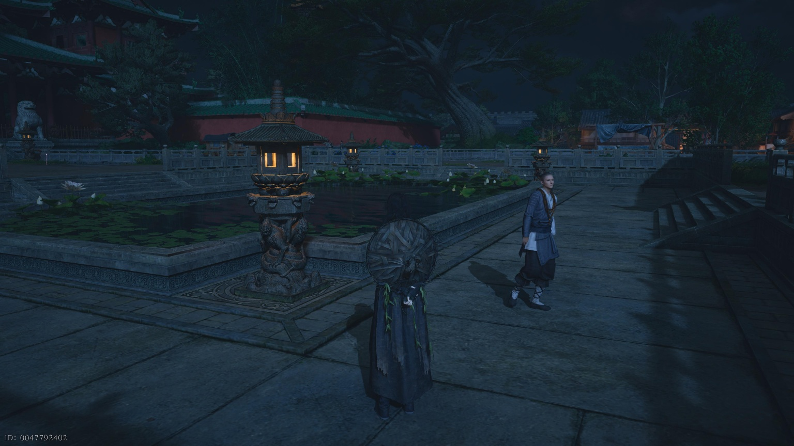
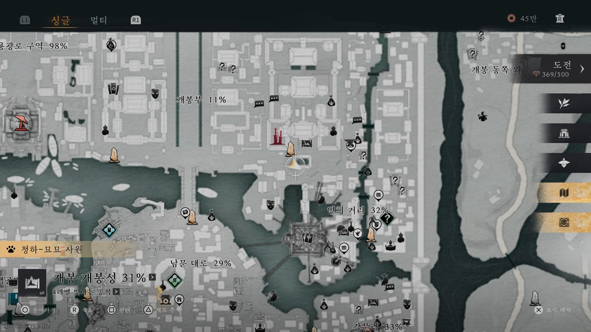
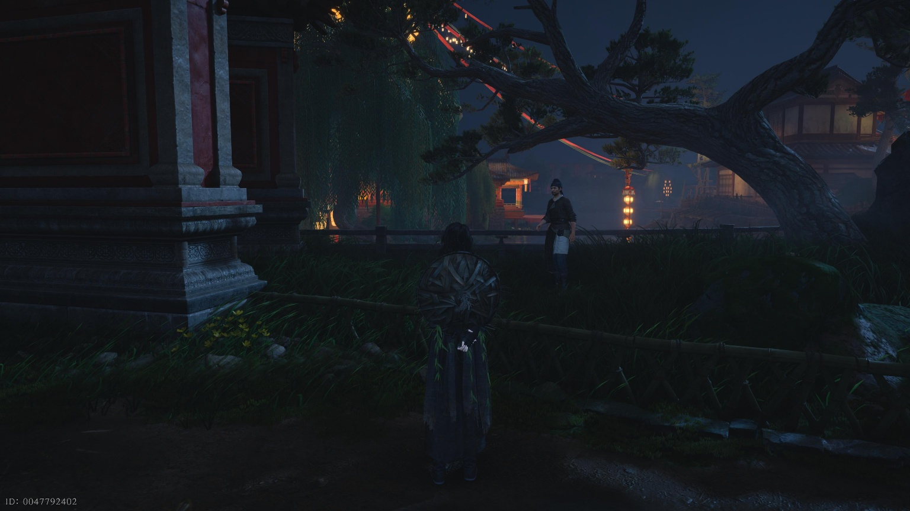
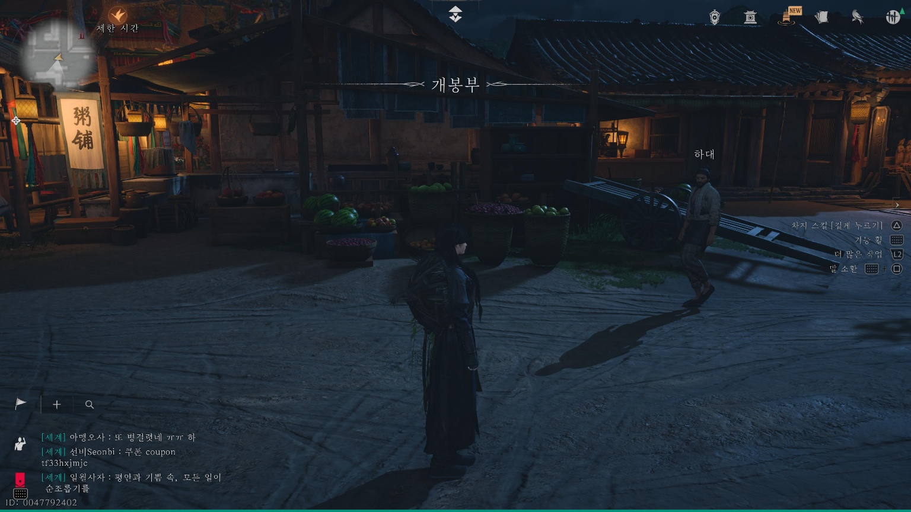
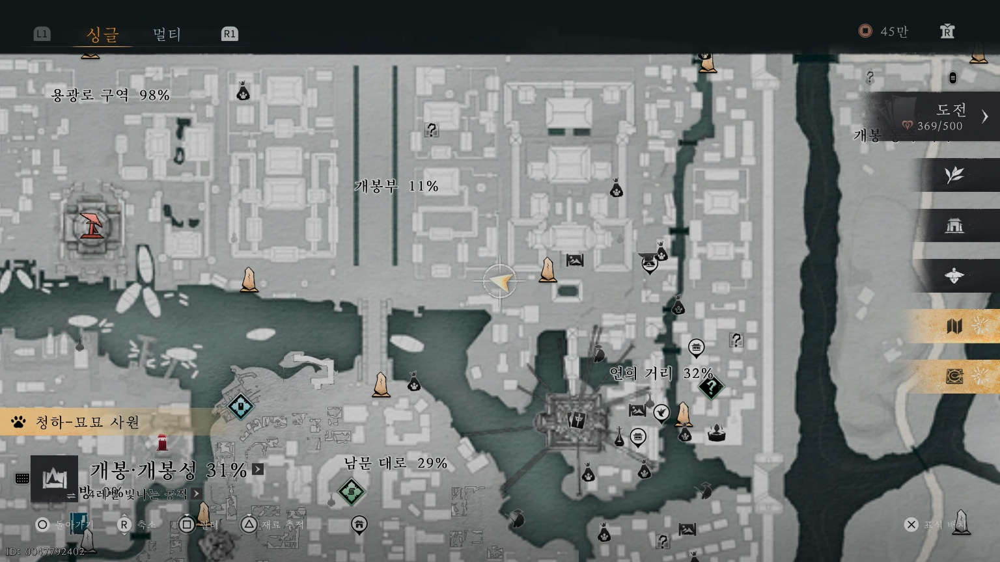

만사록
평등한 생명
대상국사 앞의 수상한 그림자 조사하기
📜 퀘스트 개요
야심한 밤, 대상국사 주변을 배회하는 밀렵꾼들을 저지하고 스님의 물건을 되찾아주는 의뢰입니다.
1. 정진 스님과의 만남 (시간 변경)
⚠️ 필수 조건: 시진을 해시(21:00~23:00)로 변경해야 합니다.
해시가 되면 아래 장소로 이동하여 정진 스님과 대화하세요.


2. 하삼 발견
정진 스님 바로 뒤쪽 나무 뒤를 살펴보세요.
숨어 있는 하삼을 발견하고 대화를 나눕니다.


3. 하대 변장 및 그물 회수
대상국사 경계석 왼쪽 길을 따라 이동하다 보면 돌아다니는 하대를 발견할 수 있습니다.
[섬등지]를 사용하여 그의 얼굴을 그린 후 변장하세요.
💡 팁: 하대가 계속 움직여서 상호작용하기 어렵다면, 몸통 박치기를 한 번 해서 잠깐 멈춰 세운 뒤 대화를 시도하세요.


변장을 마친 상태로 다시 하삼에게 돌아가세요.
숨겨둔 [그물]이 있는 곳으로 안내받게 되며, 그물을 획득한 후 정진 스님에게 돌려주면 완료됩니다.
생명을 위협하는 그물을 회수하여 전달하면
퀘스트는 완료됩니다.